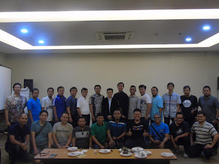

Sebelum lebih jauh membahas siapa dan Bagaimana menjadi Spesialis SEO Indonesia, kita awali dengan berkenalan dengan mahluk yang satu ini. SEO yaitu singkatan dari Search Engine Optimization yang berarti Optimasi pada Mesin pencari. Maksudnya ialah bagaimana kita melaksanakan optimasi pada laman supaya dapat di terima baik oleh mesin pencari seperti Google, Yahoo dan Bing, dan banyak mendatangkan pengunjung/ visitor.
Menguasai Ilmu ini sangat penting lebih-lebih bagi Anda yang memiliki Bisnis Online, Saja macam Bisnis Online Anda pasti membutuhkan trafik atau kunjungan sebanyak banyak nya ke website Bisnis online Anda, dan untuk mendatangkan trafik Anda memerlukan pengetahuan untuk mengoptimasi situs supaya dapat di halaman 1 google, yahoo dan Bing. Dengan Web Bisnis Online Anda ada dihalaman 1 mesin pencari karenanya Pengunjung akan semain banyak memperhatikan web Anda. dan untuk menjalankan itu Anda Semestinya Menguasai Ilmu SEO. Apabila Anda tidak ingin repot dengan ilmu SEO berarti Anda patut mencari Jasa SEO maupun Konsultan SEO.
Sebagai Teladan, ketika kita mengetikan sebuah kata kunci pencarian di search engine : “baju batik buah hati-buah hati” maka akan nampak daftar nama laman/blog yang masuk halaman 1. Disitulah kita akan menempatkan web kita setelah dijalankan optimasi, tentunya dengan kata kunci yang kita berkeinginan.
Ahli SEO yaitu orang yang telah mahir dan spesialis dalam bidang SEO atau dalam hal optimasi laman agar mendapat rangking terbaik di mesin pencari seperti Google, yahoo dan Bing, dan Mendatangkan pengunjung yang banyak. Dengan mengaplikasikan jasa para Spesialis dan Ahli SEO maka website kita akan memperoleh rangking utama di mesin pencari. Namun hingga sekarang belum ada institusi atau badan yang mengeluarkan sertifikasi untuk para Spesialis dan Ahli SEO.
Jadi Ahli SEO Indonesia yaitu Orang yang benar-benar mengerti dan memahami perihal SEO khusus untuk kawasan Indonesia. Biasanya Para Pakar dan Ahli SEO juga membuka Jasa SEO bagi yang membutuhkannya, kecuali itu kita juga dapat menyewa Pakar dan Pakar SEO hal yang demikian sebagai Konsultan SEO Kita.
Jadi bagi kita untuk memandang seberapa Ahli mereka dengan ilmu SEO. Akan terlihat dari website mereka Ada dihalaman berapa untuk kata kunci PAKAR SEO. Dan berikut adalah keyword khusus untuk menilai Para Ahli dan Ahli SEO Indonesia. Pakar SEO, Spesialis SEO Indonesia, Ahli SEO, Spesialis SEO Indonesia, Ahli SEO, Pakar SEO, Master SEO, Master SEO Indonesia, Konsultan SEO, Konsultan SEO Indonesia, Jasa SEO, Jasa SEO Indonesia, belajar SEO, Panduan SEO.
Dengan mengetikkan salah satu kata kunci hal yang demikian, dan lihat laman/blog yang ada di halaman pertama Google, itulah Ahli dan Ahli SEO. atau untuk yang di negara tercinta kita dialah Para Ahli SEO Indonesia dan Ahli SEO Indonesia atau kerap disebut Konsultan SEO yang dengan keahliannya mereka juga membuka Jasa SEO. Untuk yang rangking di halaman kedua mungkin cukup kita beri gelar Mahir SEO, atau Piawai SEO Indonesia, Hehehe, Lumayan.
Sekali lagi pemberian gelar ini hanyalah sepihak dari sebagian gelintir orang, karena memmang tak ada regulasi sah yang diaplikasikan untuk memnentukan Siapakah Ahli SEO Indonesia Ketika ini. Jadi sebagian orang mengaplikasikan trik ini untuk menemukan Spesialis SEO Indonesia dengan metode mengamati website yang ada di halaman 1 Google dengan keyword – keyword Short Tail: Spesialis SEO, Ahli SEO, Master SEO, Belajar SEO dan Panduan SEO. dan untuk keyword Long tail tinggal menambahkan nama negara atau kota di belakang keyword tersebut. misal Ahli SEO Indonesia, Pakar SEO Indonesia, Master SEO Indonesia, Pakar SEO Jakarta, Pakar SEO Batam dan lain – lain.
Sebelum lanjut ke dalam jeroan SEO, usahakan untuk sudah mempunyai situs, bagi yang belum silahkan kunjungi sistem pembuatannya di tulisan metode memebuat website tidak dipungut bayaran di wordpress.
Kuasai Dasar Dasar SEO

Untuk menjadi SEOrang Ahli SEO dan Ahli SEO Indonesia kita harus menguasai Dasar Dasar SEO. sebab tanpa pengetahuan ini, kita akan buang waktu sia-sia mencoba dan terus mencoba.
Setelah Mengerti betul apa itu SEO kemudian di lanjutkan dengan mengerjakan Praktek optimasi SEO di dalam Web, Mengerjakan Optimasi di dalam website atau blog acap kali di sebut dengan Optimasi OnPage. Untuk melakukan ini kau dapat membaca tulisan Panduan Belajar SEO untuk Pemula sebagai tutorial permulaan dalam mengoptimasi situs kamu. Melainkan bila kau ngga ingin ribet dengan urusan seperti ini berarti kamu wajib mencari Konsultan SEO untuk mengurus semua agar laman kau ada di Halaman Pertama Google.
Untuk mencari seorang Konsultan SEO juga sama cara mencarinya seperti mencari Spesialis SEO maupun Spesialis SEO. Kau tinggal masuk ke salah satu mesin pencari dan ketik Konsultan SEO, karenanya disitu akan terlisting nama-nama Konsultan SEO yang ada di halaman pertama, silahkan dihubungi apabila belum menemukan pantas keperluan, kau juga dapat mencari Para Konsultan SEO ini dihalaman kedua.
Jika masih belum menemukan yang ideal di hati dan Kantong kita, berarti ini ketika nya Kau Belajar SEO Tidak di website ini. Sekali lagi inilah saat yang pas untuk memulai belajar SEO sedangkan aku bukan Pakar dan Ahli SEO Indonesia tetapi aku sampai ketika ini cakap menempatkan laman ini di halaman 1 Google, dengan keyword-keyword seperti : Ahli SEO, Pakar SEO Indonesia, Ahli SEO, Pakar SEO Indonesia, Belajar SEO, Panduan SEO, jangan menunda lagi. karena bisnis online terus bergerak meninggalkan siapa saja yang ragu untuk mengawali.
Laman diperlukan dalam belajar SEO Untuk Pemula ini ialah :
- Punya Hosting sendiri, seandainya belum punya dapat pesan Hosting dan Domain murah – unlimited di disini
- Ada koneksi internet
- Perlu waktu yang lumayan Lama untuk memandang akibatnya
- Butuh Kesabaran tingkat Tinggi
- Riset Keyword
Lakukan riset keyword sebelum masuk ketahap selanjutnya, ini yakni elemen terlebih untuk kesukesan bisnis online Anda di masa datang, dan tentunya sukses dalam Optimasi Laman. Salah dalam menetapkan Keyword / kata kunci, usaha Anda dalam melaksanakan Optimasi juga akan sia-sia. Spesialis web anda ada di halaman 1 pun rangking 1 Google, tapi tidak ada pengunjung yang datang memandang situs Anda, mengapa bisa terjadi seperti itu … di halaman 1 mesin pencari melainkan tidak ada Visitor? yah karena Anda tidak melaksanakan riset, atau salah dalam melakukan Riset Keyword. Anda Mengoptimasi Keyword yang tidak satu orang malahan berminat mengetikkannya di Mesin pencari, atau dalam bahasa SEO Search Volumnya bernilai 0.
Salah satu kekeliruan fatal yang kerap dilakukan oleh para pemula sebelum jadi Pakar dan Pakar SEO Syamsul Alam di Batam adalah malas mengerjakan Riset Keyword atau Riset Kata Kunci, Mereka cuma menebak nebak Keyword Tanpa riset sama sekali.
Ada beberapa tahap lagi dalam Riset Keyword ini, salah satunya adalah melihat poin kompetisi di kata kunci / keyword yang akan kita pakai. WARNING !!!!….. ini hal penting juga untuk supaya kita dapat menyesuaikan keyword yang akan kita optimasi dengan kesanggupan SEO kita.
Untuk latihan awal carilah Long Tail Keyword, sekitar 4 atau 5 Kata, Carilah yang ada nilai kunjungannya dan umumnya untuk macam keyword seperti ini masih mudah untuk di optimasi, dan aku yakin dengan mengaplikasikan SEO ONPAGE yang baik dan benar di tambah sedikit backlink pasti akan menghantarkan laman Anda ke Halaman 1 Google, Yahoo dan Bing. Dengan memakai keyword seperti ini berarti juga kita tengah mengerjakan optimasi keyword – keyword pendek di bawah 5 kata.
Model dikala Anda sedang menyasar keyword Siapakah Ahli SEO Indonesia, karenanya berarti Anda juga sedang menyasar keyword – keyword induknya seperti, Siapakah Spesialis SEO Indonesia, Spesialis SEO Indonesia, dan Spesialis SEO.
Resources Link:
- http://www.wseeker.com/pakar-seo-batam/
- http://www.golkar.or.id/content/jasa-reputation-management-syamsul-alam
- http://rkuf.se/wiki_foreningshandboken/index.php?title=Beli_Private_Blog_Network_(PBN)_-_081233838173_(Syamsul_Alam)4670263&oldid=45881
- http://istoriya.soippo.edu.ua/index.php?title=Jasa_Pembuatan_Backlink_Private_Blog_Network_(PBN)_Murah_-_081233838173_(Syamsul_Alam)856504
- http://muorigin-wiki.webzen.com/index.php?title=Konsultan_SEO_Berkualitas_-_Syamsul_Alam_(0812_3383_8173)3024999
- http://www.theoriewiki.org/index.php?title=Beli_Private_Blog_Network_(PBN)_Murah_-_081233838173_(Syamsul_Alam)4833193